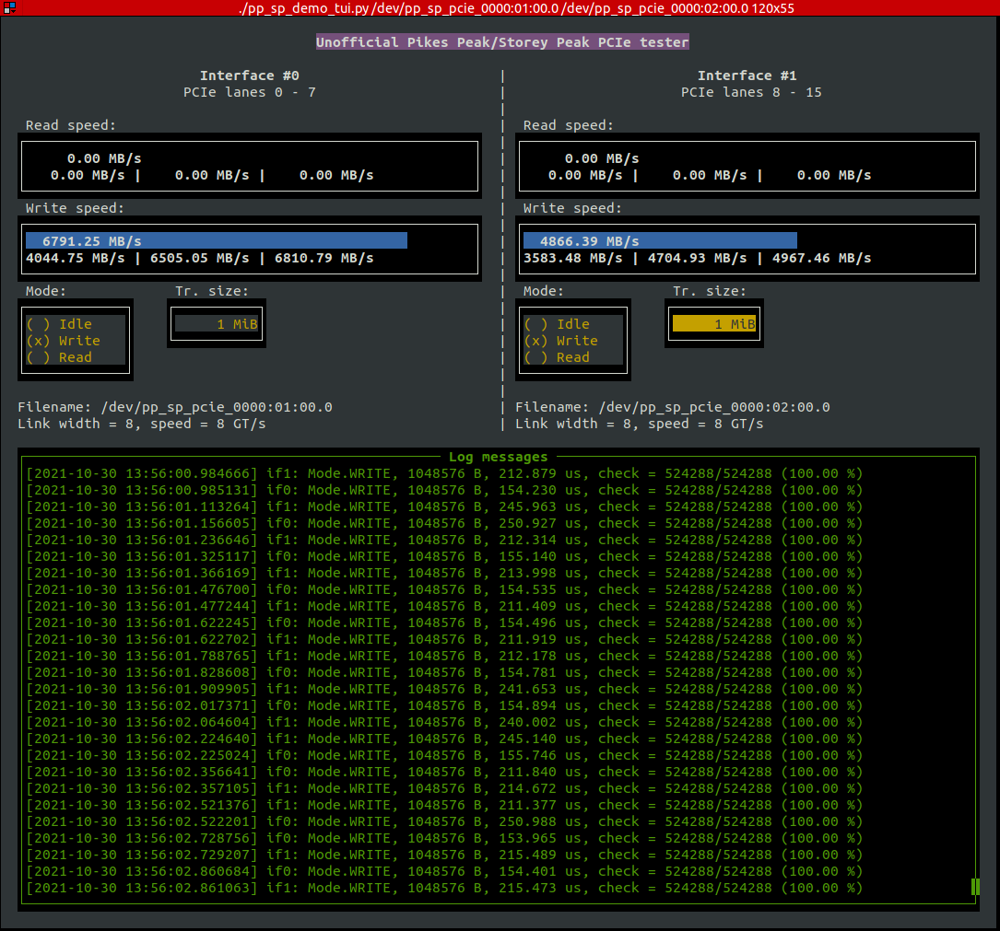

- on Sun 31 October 2021
My last blog post on this topic explored the PCI Express connections on this board. I have determined that the board contains a custom FPGA with two Hard IPs for PCIe, where the commercially-available part only contains one. At the end of the post I explored different options on how to access/enable the second IP, and none of my attempts were successful. The post concluded on an optimistic note, with an expectation that this obstacle will somehow be solved.
Luckily, a couple of weeks after my post, while I was still contemplating how to
approach this obstacle, @gatecatte managed to
figure out how to convince Quartus to let us generate a bitstream with two Hard
IP blocks; one just needs to override
DEV_DIE_INFO::is_global_id_enabled function to return true.
@rombik_su then prepared an easy-to-use patch,
available
here.
This discovery enabled me to continue with the preparation of an example design for the Pikes Peak and Storey Peaks boards.
In this blog post I describe the work done to get the PCIe interface (including a high-performance DMA) up and running and present some results of integration tests with two different computers.
Introduction
Existing IPs
Quartus contains several IPs for PCI Express, where the Hard IP is wrapped with different interfaces. The easiest one to use would be the Avalon-MM Stratix V Hard IP for PCI Express; this IP provides an Avalon-MM Host interface to handle the Memory Reads and Memory Writes as well as an Avalon-MM Agent interface to provide a Direct Memory Access (DMA) port. Another IP already contained in Quartus, called Modular Scatter-Gather DMA can be directly connected to this port to transfer the data between the on-board DDR3 memory and the system memory.
Unfortunately, for some reason, this IP does not support the operation in Gen3 x8 mode.
Development of a new IP
At this point I have decided to have some fun and develop a PCIe endpoint IP from scratch. The following were my requirements/guidelines:
- integration with Stratix V Hard IP
- high throughput: the IP should be able to operate with a 256-bit-wide interface at 250 MHz, and achieve high interface utilization
- relatively simple: it is reasonable to sacrifice a small amount of performance to keep the IP simple. For example I do not use the "Multiple packets per cycle" option - this reduces the maximum throughput by roughly 6% (16 bytes per 256-byte packet), but makes the logic much simpler.
- use of standardized interfaces: e.g. Avalon-MM and Avalon-ST
- a base for custom developments: I want to reuse this IP for other applications with this board, and the IP should be general enough to allow different use cases
- written in Chisel HDL
After several weekends of development I am proud to present my creation: PCIe endpoint with a high-performance DMA and an Avalon-MM interface
The IP is currently in version 0.7 - it is usable and it works, but some edge cases are not yet handled (one is described in this blog post) and some smaller improvements are also expected in the future.
Architecture
The figure below shows the main building block of the IP; several modules are responsible for the reception part and several modules responsible for the transmission part.

- MemoryReadWriteCompl parses the received packet and forwards it to the next corresponding module
- AvalonAgent converts MWr and MRd PCIe packets into transactions on Avalon-MM interface; it is able to handle both 32-bit and 64-bit requests (by performing two accesses on the 32-bit interface)
- CompletionRecv parses the received completion packets and forwards them on an Avalon-ST interface. It informs the BusManagerEngine about the received completion packets so that the later can keep the track of the number of dwords in flight.
- BusManagerRegs provides a read and write access to registers (similar to AvalonAgent) which are needed for the DMA engine (e.g. destination address, number of bytes to transfer, ...)
- BusManagerEngine is the main module which performs the DMA function - it generates either MWr or MRd (depending on the instructions from software). When the transfer is complete it informs the InterruptCtrl
- CompletionGen generates a completion packet after a MRd packets with the information provided by a corresponding module
- TxArbiter manages the access to the
tx_stport - InterruptCtrl generates interrupt requests on the behalf of other modules and from the external interface
Test suite
The project includes a non-very-extensive, but still very useful test suite:
Here it is clear that this is a hobby project, a serious IP would have more unit tests and also some more high-level tests.
Data generator and data checker
To validate the IP in real hardware, I have developed two auxiliary IPs: Avalon-ST Generator and Avalon-ST Checker. The first one generates a 256-bit-wide data stream composed of 16-bit counter values and the second one checks the received data stream against a reference counter and stores the results in internal registers. Both IPs also contain Avalon-MM interface which can be used to control the IPs. Shown in the figure below are the connections between all relevant IPs for the PCIe test.
Integration with Quartus Platform Designer
Below is an screenshot of the PCIe endpoint IP connected to the Stratix V Hard IP for PCI Express in Quartus Platform Designer:
Linux driver, test program and TUI
The FPGA design is only one half of this story, the second half is a Linux driver. The driver is also available on my GitHub page: Linux driver for Unofficial Pikes Peak/Storey Peak reference design.
The driver is a relatively standard Linux PCIe driver, it registers its probe
function with the PCIe subsystem based on vendor ID/device ID for Altera
Stratix V and
subsystem vendor ID of 0x01a2 (for JAN) and devices IDs of 0x0001 for the
first interface, 0x0002 for the second interface and 0x0a00 for custom
applications.
Once the match is found, it performs the house-keeping tasks (allocating memory,
claiming BARs, allocating DMA buffer, enabling the device) and it finally
creates a character device (in /dev) with a name derived from the PCIe
address.
The user-space programs interact with the driver in two ways. To access the
registers on BAR0 (i.e. reads and writes) the programs can mmap() the char
device and dereference a pointer to uint32_t or uint64_t. Two ioctls can
be used to exchange the DMA buffer with the user-space program, one for
retrieving the buffer content and another for setting it. Finally, another
ioctl can be used to start the DMA transfer; the user-space program should
provide the transfer size and the direction, and the driver will perform the
desired request. To reduce the CPU utilization, the thread is put to sleep while
the DMA transfer is running and is waken up by an interrupt request from the DMA
engine in the FPGA.
Test program
pp_sp_test is a small test program that can be used to exercise the driver
and perform DMA transfers with the DMA engine in the FPGA. The program uses
the Avalon-ST Checker and Avalon-ST Generator IPs to verify the content of
the transfer.
$ ./pp_sp_test --help
Usage: ./pp_sp_test --dev DEV [--write] [--read]
Perform DMA transfers using the DMA engine in PP/SP FPGA
options:
--help print these help and exit
--dev char device (e.g. /dev/pp_sp_pcie...)
--write card to host (DMA write) transfer
--read host to card (DMA read) transfer
--nr_bytes number of bytes to transfer (default 256)
--count count of loops to perform the reads and/or writes (default 1)
--msleep sleep (in milliseconds) during each loop (default 0)
Here is an example where 8 KiB of data was transferred in both directions. First
the data was transferred from the card to the host (c2h), and then from the
host to the card (h2c). In the end, the result of the check (in the FPGA) is
printed.
$ ./pp_sp_test --dev /dev/pp_sp_pcie_0000:42:00.0 --write --read --nr_bytes 8192
Arguments:
dev = /dev/pp_sp_pcie_0000:42:00.0
c2h = 1, h2c = 1
nr_bytes = 8192, count = 1
===================================
[loop] i = 0
[gen] id reg = a51579e2
[gen] state = 1
[gen] nr samp = 64
[c2h] DMA duration 0.024146 ms
[c2h] ioctl took 0.021000 ms
[gen] state = 0
[gen] nr samp = 8192
[check] id reg = a5157c8c
[h2c] DMA duration 0.021397 ms
[h2c] ioctl took 0.019000 ms
[check] samp = 8192 / 8192
TUI
A more elaborate program to control the DMA engine and the corresponding example application is provided in the form of a Terminal User Interface in the tui directory. With this program a user can select the size and the direction of the transfer for both interfaces. The interface displays the result of the throughput measurement in kernel space and the statistics (minimum, average, and maximum value) for the last 100 measurements.
Some screenshots of TUI are shown in the next chapters.
Test setups
I have used Storey Peak board (in PCIe form-factor) with two systems to test the PCI express:
- FUJITSU D3642-B1 motherboard with Intel i5-9600K
- Dell PowerEdge R720 with two Intel E5-2680
R720 has an x16 PCIe slot but does not support bifurcation, while the x16 PCIe slot on the Fujitsu motherboard can be split into the x8x8 configuration with a BIOS setting.
The system with the Fujitsu motherboard ran Ubuntu 18.04 LTS with Linux kernel 4.15.0-161 while the R720 ran Ubuntu 20.04 LTS with Linux kernel 5.11.22 (custom build with CMA enabled but not used in this experiment).
I have prepared three different FPGA designs:
- one with only lower 8 lanes connected and the Hard IP on the right side of the device,
- one with only upper 8 lanes connected and the Hard IP on the left side of the device, and
- one with all 16 lanes connected (in x8x8 configuration) and with both Hard IPs
The Quartus project for the last one is available in the commit 3cb9c50 Change subsystem device id for the second PCIe
| only PCIE lanes 0 to 7 | only PCIe lanes 8 to 15 | PCIe lanes 0 to 7 and 8 to 15 |
|---|---|---|
As an aside, it can be noted that the JTAG pins are located in the lower-left corner, and it is interesting to see how the fitter decided to place some of the logic halfway between the PCIe core on the right side and the JTAG pins on the left side.
Measurements
Fujitsu motherboard with right side PCIe link (lanes 0 to 7)
$ sudo lspci -d 1172: -vv
01:00.0 Non-VGA unclassified device: Altera Corporation Stratix V (rev 01)
Subsystem: Device 01a2:0001
[...]
Region 0: Memory at a1000000 (32-bit, non-prefetchable) [size=4M]
Region 2: Memory at a1400000 (32-bit, non-prefetchable) [size=256K]
Capabilities: [50] MSI: Enable+ Count=1/4 Maskable- 64bit+
Address: 00000000fee003f8 Data: 0000
[...]
LnkCap: Port #1, Speed 8GT/s, Width x8, ASPM not supported, Exit Latency L0s <4us, L1 <1us
ClockPM- Surprise- LLActRep- BwNot- ASPMOptComp+
LnkCtl: ASPM Disabled; RCB 64 bytes Disabled- CommClk+
ExtSynch- ClockPM- AutWidDis- BWInt- AutBWInt-
LnkSta: Speed 8GT/s, Width x8, TrErr- Train- SlotClk+ DLActive- BWMgmt- ABWMgmt-
[...]
Kernel driver in use: pp_sp_pcie
[...]
Here we see something interesting - the Avalon-ST Checker reports that some of the samples do not match the reference values. I investigate this issue in the following chapter.
Fujitsu motherboard with left side PCIe link (lanes 8 to 15)
$ sudo lspci -d 1172: -vv
02:00.0 Non-VGA unclassified device: Altera Corporation Stratix V (rev 01)
Subsystem: Device 01a2:0001
[...]
Region 0: Memory at a1000000 (32-bit, non-prefetchable) [size=4M]
Region 2: Memory at a1400000 (32-bit, non-prefetchable) [size=256K]
Capabilities: [50] MSI: Enable+ Count=1/4 Maskable- 64bit+
Address: 00000000fee00438 Data: 0000
[...]
LnkCap: Port #2, Speed 8GT/s, Width x8, ASPM not supported, Exit Latency L0s <4us, L1 <1us
ClockPM- Surprise- LLActRep- BwNot- ASPMOptComp+
LnkCtl: ASPM Disabled; RCB 64 bytes Disabled- CommClk+
ExtSynch- ClockPM- AutWidDis- BWInt- AutBWInt-
LnkSta: Speed 8GT/s, Width x8, TrErr- Train- SlotClk+ DLActive- BWMgmt- ABWMgmt-
[...]
Kernel driver in use: pp_sp_pcie
[...]
Similarly, also here the the Avalon-ST Checker reports corrupted samples.
Fujitsu motherboard with both PCIe links (lanes 0 to 7 and 8 to 15)
pp_sp_example > pcie status
pcie 0:
id = 2c1e57a7
version = 10000
status.cur speed = 3
status.LTTSM state = f
status.lane act = 8
status.DL up = 1
pcie 1:
id = 2c1e57a7
version = 10000
status.cur speed = 3
status.LTTSM state = f
status.lane act = 8
status.DL up = 1
$ sudo lspci -d 1172: -vv | egrep 'Altera|LnkSta|Subsystem'
01:00.0 Non-VGA unclassified device: Altera Corporation Stratix V (rev 01)
Subsystem: Device 01a2:0001
LnkSta: Speed 8GT/s, Width x8, TrErr- Train- SlotClk+ DLActive- BWMgmt- ABWMgmt-
LnkSta2: Current De-emphasis Level: -3.5dB, EqualizationComplete+, EqualizationPhase1+
02:00.0 Non-VGA unclassified device: Altera Corporation Stratix V (rev 01)
Subsystem: Device 01a2:0001
LnkSta: Speed 8GT/s, Width x8, TrErr- Train- SlotClk+ DLActive- BWMgmt- ABWMgmt-
LnkSta2: Current De-emphasis Level: -3.5dB, EqualizationComplete+, EqualizationPhase1+


And not surprisingly, when using both interfaces to read the Avalon-ST Checker reports some corrupted samples as well.
Dell PowerEdge R720
$ sudo lspci -d 1172: -vv | egrep 'Altera|LnkSta|Subsys'
42:00.0 Non-VGA unclassified device: Altera Corporation Stratix V (rev 01)
Subsystem: Device 01a2:0001
LnkSta: Speed 8GT/s (ok), Width x8 (ok)
LnkSta2: Current De-emphasis Level: -6dB, EqualizationComplete+, EqualizationPhase1+
Issues
Handling of out-of-order CplD packets
As we have seen above, when running in combination with Intel i5-9600K there is a small percentage of the samples that Avalon-ST Checker reports as corrupted.
To observe what is going on, I have placed a SignalTap on the important signals of the Avalon-ST Checker, and let it trigger on invalid packets.
We can note that for a couple of cycles the data_valid_p signal is high, but
data_ok_p is low, indicating that the received data does not match the
reference data. After a couple of clock cycles the data stream seems to recover.
If we store the data from this SignalTap capture into a .csv file and
highlight the important fields in the header (blue is Length, magenta is
Tag, black is the payload data), we can observe that two of the packets are
returned out of order. We can observe that first a packet with the tag 0xb is
returned (in the sample at time -11), but only the first 0x30 dwords - there are
still 0x10 dwords outstanding to fulfill the 0x40 dwords (256 bytes) long
request. Instead of continuing with the remaining part of the packet with the
tag 0xb, the next packet contains the tag 0xc (in the sample at time -4).
Only after this packet, the transaction with the tag 0xb is completed (in the
sample at time -1).
PCI Express devices are allowed to return completion packets out-of-order:
Completions with different Transaction IDs are permitted to pass each other.
My PCIe endpoint IP currently does not support out-of-order CplD packets, but adding support for this case should be relatively straightforward: the receiving side needs to keep track of the number of dwords remaining per each tag, and queue the packets when the current tag is not yet complete.
Summary
In this blog post I have summarized my current experience with PCIe on Storey Peak board. With a small hack one is able to use both PCIe Hard IPs available in this device and use the PCIe interface in the full Gen3 x8x8 mode.
I have developed a PCIe endpoint IP that connects to the PCIe Hard IP and provides register access and DMA capabilities. The DMA is able to achieve 6.5 GB/s in both read and write direction on one interface. With both interfaces active it achieves 11 GB/s in write direction and 12 GB/s in read direction. I would consider this to be a good result.
We can now declare the PCIe part "solved", and this concludes the last major effort in reverse engineering of this board. The last remaining part is providing an example for the use of QSFP connectors, and some general clean-up of the reference design.
Appendix
lspci on Fujitsu motherboard
$ sudo lspci -d 1172: -vv
01:00.0 Non-VGA unclassified device: Altera Corporation Stratix V (rev 01)
Subsystem: Device 01a2:0001
Control: I/O- Mem+ BusMaster+ SpecCycle- MemWINV- VGASnoop- ParErr- Stepping- SERR- FastB2B- DisINTx+
Status: Cap+ 66MHz- UDF- FastB2B- ParErr- DEVSEL=fast >TAbort- <TAbort- <MAbort- >SERR- <PERR- INTx-
Latency: 0, Cache Line Size: 64 bytes
Interrupt: pin A routed to IRQ 136
Region 0: Memory at a1000000 (32-bit, non-prefetchable) [size=4M]
Region 2: Memory at a1400000 (32-bit, non-prefetchable) [size=256K]
Capabilities: [50] MSI: Enable+ Count=1/4 Maskable- 64bit+
Address: 00000000fee003f8 Data: 0000
Capabilities: [78] Power Management version 3
Flags: PMEClk- DSI- D1- D2- AuxCurrent=0mA PME(D0-,D1-,D2-,D3hot-,D3cold-)
Status: D0 NoSoftRst- PME-Enable- DSel=0 DScale=0 PME-
Capabilities: [80] Express (v2) Endpoint, MSI 00
DevCap: MaxPayload 256 bytes, PhantFunc 0, Latency L0s <64ns, L1 <1us
ExtTag+ AttnBtn- AttnInd- PwrInd- RBE+ FLReset- SlotPowerLimit 75.000W
DevCtl: Report errors: Correctable- Non-Fatal- Fatal- Unsupported-
RlxdOrd+ ExtTag+ PhantFunc- AuxPwr- NoSnoop+
MaxPayload 256 bytes, MaxReadReq 512 bytes
DevSta: CorrErr- UncorrErr- FatalErr- UnsuppReq- AuxPwr- TransPend-
LnkCap: Port #1, Speed 8GT/s, Width x8, ASPM not supported, Exit Latency L0s <4us, L1 <1us
ClockPM- Surprise- LLActRep- BwNot- ASPMOptComp+
LnkCtl: ASPM Disabled; RCB 64 bytes Disabled- CommClk+
ExtSynch- ClockPM- AutWidDis- BWInt- AutBWInt-
LnkSta: Speed 8GT/s, Width x8, TrErr- Train- SlotClk+ DLActive- BWMgmt- ABWMgmt-
DevCap2: Completion Timeout: Range ABCD, TimeoutDis+, LTR-, OBFF Not Supported
DevCtl2: Completion Timeout: 50us to 50ms, TimeoutDis-, LTR-, OBFF Disabled
LnkCtl2: Target Link Speed: 8GT/s, EnterCompliance- SpeedDis-
Transmit Margin: Normal Operating Range, EnterModifiedCompliance- ComplianceSOS-
Compliance De-emphasis: -6dB
LnkSta2: Current De-emphasis Level: -3.5dB, EqualizationComplete+, EqualizationPhase1+
EqualizationPhase2-, EqualizationPhase3-, LinkEqualizationRequest-
Capabilities: [100 v1] Virtual Channel
Caps: LPEVC=0 RefClk=100ns PATEntryBits=1
Arb: Fixed- WRR32- WRR64- WRR128-
Ctrl: ArbSelect=Fixed
Status: InProgress-
VC0: Caps: PATOffset=00 MaxTimeSlots=1 RejSnoopTrans-
Arb: Fixed- WRR32- WRR64- WRR128- TWRR128- WRR256-
Ctrl: Enable+ ID=0 ArbSelect=Fixed TC/VC=ff
Status: NegoPending- InProgress-
Capabilities: [200 v1] Vendor Specific Information: ID=1172 Rev=0 Len=044 <?>
Capabilities: [300 v1] #19
Capabilities: [800 v1] Advanced Error Reporting
UESta: DLP- SDES- TLP- FCP- CmpltTO- CmpltAbrt- UnxCmplt- RxOF- MalfTLP- ECRC- UnsupReq- ACSViol-
UEMsk: DLP- SDES- TLP- FCP- CmpltTO- CmpltAbrt- UnxCmplt- RxOF- MalfTLP- ECRC- UnsupReq- ACSViol-
UESvrt: DLP+ SDES+ TLP- FCP+ CmpltTO- CmpltAbrt- UnxCmplt- RxOF+ MalfTLP+ ECRC- UnsupReq- ACSViol-
CESta: RxErr- BadTLP- BadDLLP- Rollover- Timeout- NonFatalErr-
CEMsk: RxErr- BadTLP- BadDLLP- Rollover- Timeout- NonFatalErr+
AERCap: First Error Pointer: 00, GenCap+ CGenEn- ChkCap+ ChkEn-
Kernel driver in use: pp_sp_pcie
Kernel modules: altera_cvp
$ sudo lspci -d 1172: -vv
02:00.0 Non-VGA unclassified device: Altera Corporation Stratix V (rev 01)
Subsystem: Device 01a2:0001
Control: I/O- Mem+ BusMaster+ SpecCycle- MemWINV- VGASnoop- ParErr- Stepping- SERR- FastB2B- DisINTx+
Status: Cap+ 66MHz- UDF- FastB2B- ParErr- DEVSEL=fast >TAbort- <TAbort- <MAbort- >SERR- <PERR- INTx-
Latency: 0, Cache Line Size: 64 bytes
Interrupt: pin A routed to IRQ 137
Region 0: Memory at a1000000 (32-bit, non-prefetchable) [size=4M]
Region 2: Memory at a1400000 (32-bit, non-prefetchable) [size=256K]
Capabilities: [50] MSI: Enable+ Count=1/4 Maskable- 64bit+
Address: 00000000fee00438 Data: 0000
Capabilities: [78] Power Management version 3
Flags: PMEClk- DSI- D1- D2- AuxCurrent=0mA PME(D0-,D1-,D2-,D3hot-,D3cold-)
Status: D0 NoSoftRst- PME-Enable- DSel=0 DScale=0 PME-
Capabilities: [80] Express (v2) Endpoint, MSI 00
DevCap: MaxPayload 256 bytes, PhantFunc 0, Latency L0s <64ns, L1 <1us
ExtTag+ AttnBtn- AttnInd- PwrInd- RBE+ FLReset- SlotPowerLimit 75.000W
DevCtl: Report errors: Correctable- Non-Fatal- Fatal- Unsupported-
RlxdOrd+ ExtTag+ PhantFunc- AuxPwr- NoSnoop+
MaxPayload 256 bytes, MaxReadReq 512 bytes
DevSta: CorrErr+ UncorrErr- FatalErr- UnsuppReq- AuxPwr- TransPend-
LnkCap: Port #2, Speed 8GT/s, Width x8, ASPM not supported, Exit Latency L0s <4us, L1 <1us
ClockPM- Surprise- LLActRep- BwNot- ASPMOptComp+
LnkCtl: ASPM Disabled; RCB 64 bytes Disabled- CommClk+
ExtSynch- ClockPM- AutWidDis- BWInt- AutBWInt-
LnkSta: Speed 8GT/s, Width x8, TrErr- Train- SlotClk+ DLActive- BWMgmt- ABWMgmt-
DevCap2: Completion Timeout: Range ABCD, TimeoutDis+, LTR-, OBFF Not Supported
DevCtl2: Completion Timeout: 50us to 50ms, TimeoutDis-, LTR-, OBFF Disabled
LnkCtl2: Target Link Speed: 8GT/s, EnterCompliance- SpeedDis-
Transmit Margin: Normal Operating Range, EnterModifiedCompliance- ComplianceSOS-
Compliance De-emphasis: -6dB
LnkSta2: Current De-emphasis Level: -3.5dB, EqualizationComplete+, EqualizationPhase1+
EqualizationPhase2+, EqualizationPhase3+, LinkEqualizationRequest-
Capabilities: [100 v1] Virtual Channel
Caps: LPEVC=0 RefClk=100ns PATEntryBits=1
Arb: Fixed- WRR32- WRR64- WRR128-
Ctrl: ArbSelect=Fixed
Status: InProgress-
VC0: Caps: PATOffset=00 MaxTimeSlots=1 RejSnoopTrans-
Arb: Fixed- WRR32- WRR64- WRR128- TWRR128- WRR256-
Ctrl: Enable+ ID=0 ArbSelect=Fixed TC/VC=ff
Status: NegoPending- InProgress-
Capabilities: [200 v1] Vendor Specific Information: ID=1172 Rev=0 Len=044 <?>
Capabilities: [300 v1] #19
Capabilities: [800 v1] Advanced Error Reporting
UESta: DLP- SDES- TLP- FCP- CmpltTO- CmpltAbrt- UnxCmplt- RxOF- MalfTLP- ECRC- UnsupReq- ACSViol-
UEMsk: DLP- SDES- TLP- FCP- CmpltTO- CmpltAbrt- UnxCmplt- RxOF- MalfTLP- ECRC- UnsupReq- ACSViol-
UESvrt: DLP+ SDES+ TLP- FCP+ CmpltTO- CmpltAbrt- UnxCmplt- RxOF+ MalfTLP+ ECRC- UnsupReq- ACSViol-
CESta: RxErr- BadTLP- BadDLLP- Rollover- Timeout- NonFatalErr-
CEMsk: RxErr- BadTLP- BadDLLP- Rollover- Timeout- NonFatalErr+
AERCap: First Error Pointer: 00, GenCap+ CGenEn- ChkCap+ ChkEn-
Kernel driver in use: pp_sp_pcie
Kernel modules: altera_cvp
lspci on Dell R720
$ sudo lspci -d 1172: -vv
42:00.0 Non-VGA unclassified device: Altera Corporation Stratix V (rev 01)
Subsystem: Device 01a2:0001
Control: I/O- Mem+ BusMaster+ SpecCycle- MemWINV- VGASnoop- ParErr- Stepping- SERR- FastB2B- DisINTx+
Status: Cap+ 66MHz- UDF- FastB2B- ParErr- DEVSEL=fast >TAbort- <TAbort- <MAbort- >SERR- <PERR- INTx-
Latency: 0, Cache Line Size: 64 bytes
Interrupt: pin A routed to IRQ 167
NUMA node: 1
Region 0: Memory at d5000000 (32-bit, non-prefetchable) [size=4M]
Region 2: Memory at d57c0000 (32-bit, non-prefetchable) [size=256K]
Capabilities: [50] MSI: Enable+ Count=1/4 Maskable- 64bit+
Address: 00000000fee00918 Data: 0000
Capabilities: [78] Power Management version 3
Flags: PMEClk- DSI- D1- D2- AuxCurrent=0mA PME(D0-,D1-,D2-,D3hot-,D3cold-)
Status: D0 NoSoftRst- PME-Enable- DSel=0 DScale=0 PME-
Capabilities: [80] Express (v2) Endpoint, MSI 00
DevCap: MaxPayload 256 bytes, PhantFunc 0, Latency L0s <64ns, L1 <1us
ExtTag+ AttnBtn- AttnInd- PwrInd- RBE+ FLReset- SlotPowerLimit 25.000W
DevCtl: CorrErr- NonFatalErr+ FatalErr+ UnsupReq+
RlxdOrd+ ExtTag+ PhantFunc- AuxPwr- NoSnoop+
MaxPayload 256 bytes, MaxReadReq 512 bytes
DevSta: CorrErr- NonFatalErr- FatalErr- UnsupReq- AuxPwr- TransPend-
LnkCap: Port #1, Speed 8GT/s, Width x8, ASPM not supported
ClockPM- Surprise- LLActRep- BwNot- ASPMOptComp+
LnkCtl: ASPM Disabled; RCB 64 bytes Disabled- CommClk+
ExtSynch- ClockPM- AutWidDis- BWInt- AutBWInt-
LnkSta: Speed 8GT/s (ok), Width x8 (ok)
TrErr- Train- SlotClk+ DLActive- BWMgmt- ABWMgmt-
DevCap2: Completion Timeout: Range ABCD, TimeoutDis+, NROPrPrP-, LTR-
10BitTagComp-, 10BitTagReq-, OBFF Not Supported, ExtFmt-, EETLPPrefix-
EmergencyPowerReduction Not Supported, EmergencyPowerReductionInit-
FRS-, TPHComp-, ExtTPHComp-
AtomicOpsCap: 32bit- 64bit- 128bitCAS-
DevCtl2: Completion Timeout: 65ms to 210ms, TimeoutDis-, LTR-, OBFF Disabled
AtomicOpsCtl: ReqEn-
LnkCtl2: Target Link Speed: 8GT/s, EnterCompliance- SpeedDis-
Transmit Margin: Normal Operating Range, EnterModifiedCompliance- ComplianceSOS-
Compliance De-emphasis: -6dB
LnkSta2: Current De-emphasis Level: -6dB, EqualizationComplete+, EqualizationPhase1+
EqualizationPhase2+, EqualizationPhase3+, LinkEqualizationRequest-
Capabilities: [100 v1] Virtual Channel
Caps: LPEVC=0 RefClk=100ns PATEntryBits=1
Arb: Fixed- WRR32- WRR64- WRR128-
Ctrl: ArbSelect=Fixed
Status: InProgress-
VC0: Caps: PATOffset=00 MaxTimeSlots=1 RejSnoopTrans-
Arb: Fixed- WRR32- WRR64- WRR128- TWRR128- WRR256-
Ctrl: Enable+ ID=0 ArbSelect=Fixed TC/VC=ff
Status: NegoPending- InProgress-
Capabilities: [200 v1] Vendor Specific Information: ID=1172 Rev=0 Len=044 <?>
Capabilities: [300 v1] Secondary PCI Express
LnkCtl3: LnkEquIntrruptEn-, PerformEqu-
LaneErrStat: 0
Capabilities: [800 v1] Advanced Error Reporting
UESta: DLP- SDES- TLP- FCP- CmpltTO- CmpltAbrt- UnxCmplt- RxOF- MalfTLP- ECRC- UnsupReq- ACSViol-
UEMsk: DLP- SDES- TLP- FCP- CmpltTO- CmpltAbrt+ UnxCmplt+ RxOF- MalfTLP- ECRC- UnsupReq- ACSViol-
UESvrt: DLP+ SDES+ TLP+ FCP+ CmpltTO+ CmpltAbrt- UnxCmplt- RxOF+ MalfTLP+ ECRC+ UnsupReq- ACSViol-
CESta: RxErr- BadTLP- BadDLLP- Rollover- Timeout- AdvNonFatalErr-
CEMsk: RxErr+ BadTLP+ BadDLLP+ Rollover+ Timeout+ AdvNonFatalErr+
AERCap: First Error Pointer: 00, ECRCGenCap+ ECRCGenEn- ECRCChkCap+ ECRCChkEn-
MultHdrRecCap- MultHdrRecEn- TLPPfxPres- HdrLogCap-
HeaderLog: 00000000 00000000 00000000 00000000
Kernel driver in use: pp_sp_pcie
Kernel modules: altera_cvp